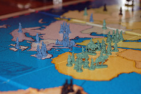

RISK STATS

Supposing you are playing a game of RISK, and
you find yourself in possession of a good number of armies on some territory
or another. I bet you'd be pretty interested to know in advance what would happen
if you made your armies attack an opponent's army pile (or if your opponent
used a pile to attack you)! This site serves as just such an almanac:
a set of tables capturing the survival outcomes of an all-out brawl between
two hordes.
These numbers come from running a thousand simulations for each potential
face-off. Each simulation assumes that fights are always conducted with 3
dice attacking and 2 defending, and that fights continue until either
(a) the defending armies have been eliminated or (b) attacker has fewer
than 4 armies left, and can no longer roll 3 dice to attack. When the simulated
fight's over, we can count the number of armies left standing, and compute the mean,
median, mode, and histogram for each side!
I am attacking with ...
4 armies5 armies6 armies7 armies8 armies9 armies10 armies
11 armies12 armies13 armies14 armies15 armies16 armies17 armies18 armies19 armies20 armies21 armies22 armies23 armies24 armies25 armies26 armies27 armies28 armies29 armies30 armies31 armies32 armies33 armies34 armies35 armies36 armies37 armies38 armies39 armies40 armies41 armies42 armies43 armies44 armies45 armies46 armies47 armies48 armies49 armies50 armies
I am defending with ...
1 army2 armies3 armies4 armies5 armies6 armies7 armies8 armies9 armies10 armies
11 armies12 armies13 armies14 armies15 armies16 armies17 armies18 armies19 armies20 armies21 armies22 armies23 armies24 armies25 armies26 armies27 armies28 armies29 armies30 armies31 armies32 armies33 armies34 armies35 armies36 armies37 armies38 armies39 armies40 armies41 armies42 armies43 armies44 armies45 armies46 armies47 armies48 armies49 armies50 armies
Image "RISK" courtesy Kyle Kesselring.